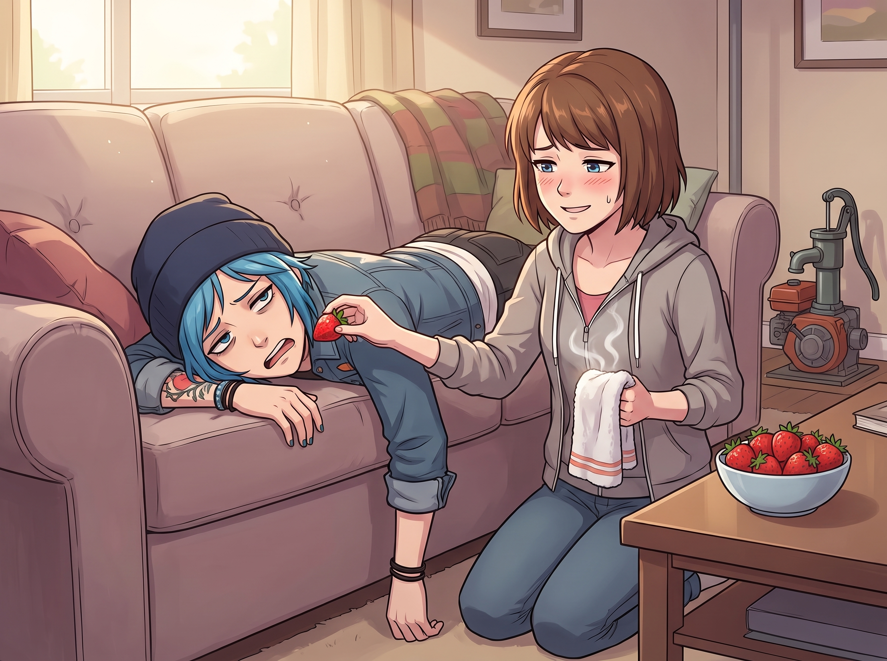

長輩認證的日常機制

這趟阿卡迪亞灣之行帶回來的，除了指南針，還有一套全新的「權力食物鏈」。Max 手握著長輩官方認證的絕對王炸，而 Chloe 也憑藉厚臉皮和生存本能，把繼父的託付轉化成了無懈可擊的耍賴特權。
一、Max 的家長牌
每當 Chloe 試圖在工坊發動幼稚的惡作劇，Max 不再需要暴力反抗，只需優雅地打出幾張「家長牌」。
有一次 Chloe 想拿冰鎮可樂罐貼在 Max 脖子上嚇人，Max 連頭都不回，只是平靜地扶了扶眼鏡：「Chloe，Joyce 昨天特別交代，如果妳再把含糖飲料帶進暗房，她下個月寄來的不是煙燻牛肉乾，而是兩打全素羽衣甘藍乾。」Chloe 的動作瞬間僵住，乖乖把可樂罐移開。
還有一次，Chloe 想仗著手長搶走最後一塊肉桂卷，Max 只是默默從口袋裡掏出那枚沉甸甸的黃銅指南針放在桌上：「『如果她犯混，拿這東西敲她的頭』——需要我替前海軍陸戰隊中士執行戰術紀律嗎？」Chloe 只能抱著頭倒在沙發上哀嚎：「靠！老頭子到底給了妳多少合法開火權？！」
二、Chloe 的奉旨撒嬌
然而 Chloe 從來不是吃素的。她敏銳地抓住了 David 臨別前那句「保護好妳的乘客」，徹底曲解成了自己的免死金牌。
修完老式水泵發動機後，她整個人像一灘融化的藍色大貓一樣癱在長沙發上：「報告長官！本工坊最高法人的右肩在執行維修任務時遭受了 80% 的疲勞打擊！根據麥德森老頭的最高軍令，Maxine 必須立刻提供三十分鐘的肩膀推拿，外加親手投餵三顆草莓！」Max 臉頰微紅地嘆了口氣，手卻已經自覺地拿來熱毛巾，順便塞了顆草莓進她嘴裡。
每當兩人被抓包在角落偷偷親吻，Chloe 也會大言不慚地把 Joyce 的話搬出來當盾牌：「我媽說了，我們要維持健康頻繁的情感交流以促進身心平衡，這是在嚴格執行長輩的醫囑！」結果被滿臉通紅的 Max 一腳踩在工裝靴上。
三、圍觀群眾的生無可戀
Victoria 對這套天天上演的「長輩認證打情罵俏」徹底麻木，甚至私下悄悄託人為指南針展櫃訂製了一座胡桃木底座和刻字銅牌，卻嘴硬說只是「不能忍受廉價陳列方式」；Kate 則在一旁笑瞇瞇地補刀，偶爾在 Chloe 撒嬌過頭時輕聲提醒：「Chloe，如果妳再不把螺母分類好，我就要把你搶 Max 薯條的照片發給 Joyce 阿姨看囉。」——每次都精準破防，讓 Chloe 老老實實爬起來幹活。
這枚指南針與長輩的認可，非但沒有成為約束她們的教條，反而成了這間火車工坊裡最溫暖、最理直氣壯的日常情趣——一個負責拿著「軍令」溫柔管教，另一個負責奉旨耍賴討要擁抱，在波特蘭的漫長歲月裡，把日子過成了誰也插不進去的甜鬧模樣。